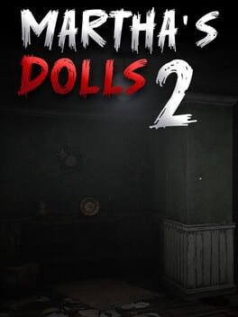

- Release
- September 1, 2026
- Price
- $4.99
- Steam reviews
- 81% positive (22 reviews)
- Languages
- 9
The story
The story picks up after Chapter 1. An urban explorer enters Martha's House to find out what is behind the local rumours, and discovers that the house is not empty. People who came before seem to have vanished.
The sequel opens the house up with new rooms and hidden crawlspaces. The dolls act with more intent than before, and a refined lighting engine and 3D audio carry the dread.
What is inside
- Expanded rooms and hidden crawlspaces
- Dolls with their own abilities that actively hunt you
- Refined lighting engine and 3D audio
- Inventory system and puzzles
- Multiple endings

Where to play
Screenshots, the trailer and reviews are on the store pages.